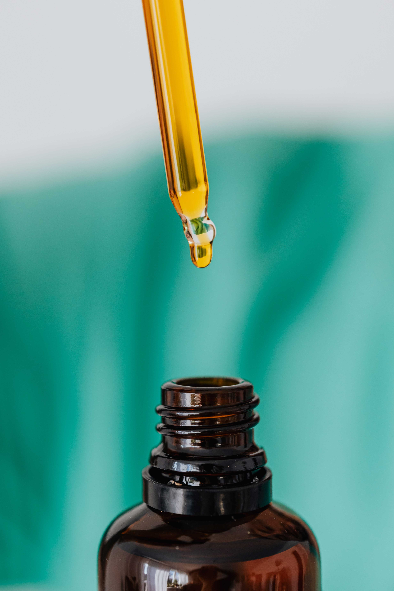

Bien-être par O
L'Expérience O utilise les huiles essentielles (aromathérapie) pour traiter plusieurs problèmes de santé. La nature a tant de bienfaits à nous offrir: lutter contre les virus,réduire les inflammations, parfumer la maison... Leur vertus sont infinis. Comment les intégrer dans notre quotidien? Quelles huiles utiliser?
Il y a différentes manière de les intégrer: par voie orale, par l'application cutané, pas des bains aromatiques ou bien par inhalation. Produits naturelles, mais très puissantes!
L'Expérience O offre 8 huiles naturelles qui saura certainement apaiser votre corps, mais aussi votre esprit.
Des questions? Un problème? Plus de produits? N'hésitez pas à me laisser un message sous l'onglet contactez-moi. Au plaisir de vous servir.